研究问题
buffer_post、g_pre、g_post 的半正交误差。名词速查
| 术语 / 代号 | 含义 |
|---|---|
AdamW | 不做矩阵正交化的 optimizer baseline。 |
stable5 | 连续 5 步 stable Newton-Schulz 系数，也对应代码里的 vanilla 调度。 |
fast5 | 连续 5 步 fast Muon 系数，是当前实验中最强的 practical baseline。 |
manual_T5_f3_s2 | 总 5 步：3 步 fast 后接 2 步 stable。 |
manual_T9_f4_s5 | 总 9 步：4 步 fast 后接 5 步 stable。 |
PE | Polar Express，根据 lower bound 逐步生成五次多项式系数。 |
lower bound | PE 设计系数时假设的最小奇异值尺度，改变它会改变小奇异值区域的映射形状。 |
buffer_post | momentum buffer 更新后的矩阵。 |
g_pre | 进入正交化前的 Nesterov mixed matrix。 |
g_post | 正交化后的 update matrix，是最终用于参数更新的矩阵。 |
gain | \(p_T(\sigma)/\sigma\)，表示某个奇异值经过完整 schedule 后被放大多少倍。 |
实验地图
| 实验组 | 控制变量 | 回答的问题 |
|---|---|---|
| 基础 T=5 对照 | 固定 T=5，只换系数序列 | stable / fast / manual / PE 的核心差异。 |
| Benchmark | 同样训练预算，记录 wall-clock | 正交化矩阵更新和更深迭代带来多少时间成本。 |
| Spectral | 采样 update 矩阵并做 SVD | 不同系数序列是否真的改变 update geometry。 |
| Multi-seed | 代表配置 seeds 0/1/2 | final loss 差距是否大于 seed 波动。 |
| LR sanity | 代表配置 lr=0.5/1.0/2.0 | 主结论是否依赖某个配置偶然拿到更好 LR。 |
| Manual depth | 比较 T=5/7/8/9/10 的 manual family | 增加迭代深度是否持续带来收益。 |
| PE lower/depth | 改变 PE lower bound 和 T | PE 的数学假设如何影响训练和谱映射。 |
| Polynomial maps | 只用系数计算 \(p_T(\sigma)\) | 从数学上解释不同 schedule 的行为。 |
图中的颜色表示方法家族：蓝色 AdamW，灰色 stable，绿色 fast，橙色 manual，紫色 PE；marker 表示具体配置，虚线/点线只在同一方法家族有多条曲线时用于区分 LR、lower bound 或 depth。
基础控制变量实验
这一组是最干净的核心对照：固定 T=5、模型、数据、训练预算、batch 和学习率调度，只改变正交化系数序列。
基础 T=5：loss、wall-clock 与 g_post error
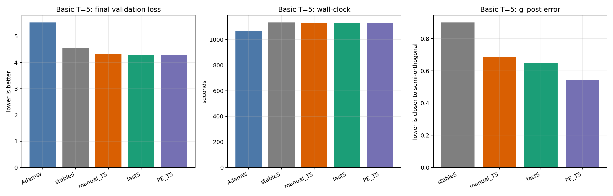
怎么看：左图看最终 validation loss，中图看端到端 wall-clock，右图看正交化后的 g_post 半正交误差。三张图使用同一颜色编码。
分析：如果只看 loss，fast 与 PE 位于第一梯队，stable 明显落后；如果看 wall-clock，同样 T=5 的 Muon 变体几乎重合；如果看几何，PE 的 g_post error 最低。
结论：系数序列本身会影响训练和几何；同样五步迭代下，改变标量系数几乎不改变运行时间。
核心 T=5：validation loss 曲线
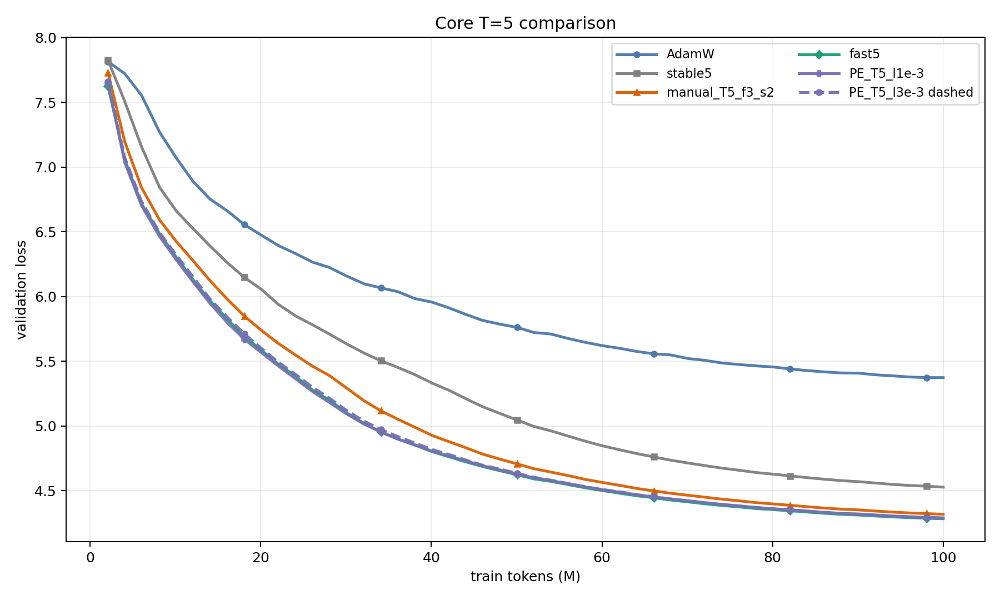
怎么看：横轴是训练 token，纵轴是 validation loss；同一 token 下曲线越低，表示同样数据量学得越快。这里固定 seed=0、lr=1.0；三角点对应 manual，紫色 PE 中若有虚线只是用于区分不同 lower bound。
分析：AdamW 曲线整体更高，说明缺少矩阵正交化更新时当前设置明显较弱；stable5 虽然属于 Muon，但下降速度慢于 fast5 和 PE；manual_T5 位于 stable 与 fast 之间。fast5 与 PE 曲线非常接近，不能只凭肉眼说某一个绝对胜出。
结论：T=5 固定时，fast coefficients 和较好的 PE 系数能带来更好的 token efficiency。
扩展实验
扩展实验围绕代表性问题展开：seed 稳定性、LR 敏感性、manual depth、PE lower bound 和 PE depth。
Follow-up validation loss：分面曲线
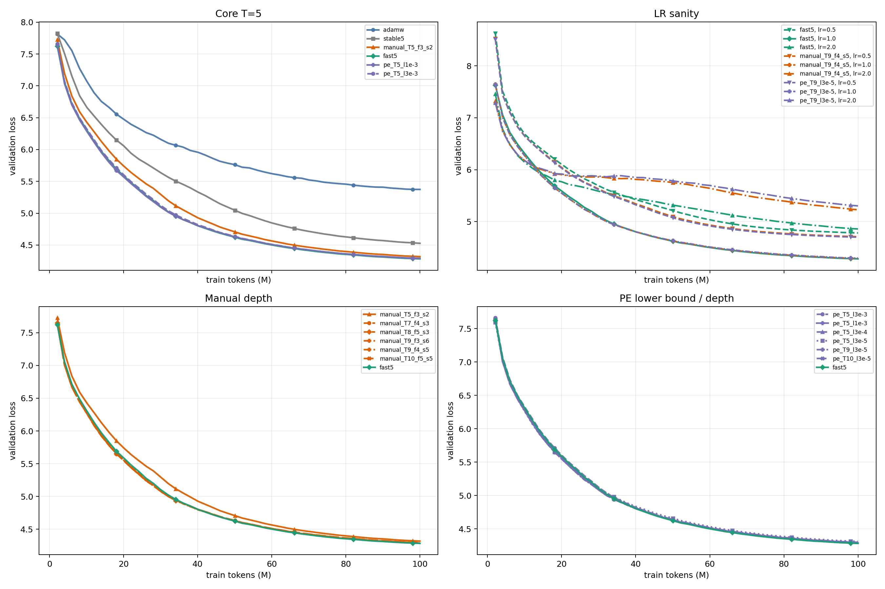
怎么看：每个小图只比较一个问题：核心 T=5、LR sanity、manual depth、PE lower/depth。这里画的是代表性 seed=0 曲线；多 seed 稳定性看下一张柱状图。颜色表示方法家族，虚线/点线/marker 表示 LR、lower bound 或 depth。
分析：曲线轻微抖动来自有限 eval tokens、随机 minibatch 轨迹和较激进配置的局部波动；持续平滑下降说明优化稳定，平台期或下降变慢说明该配置在当前预算下学习效率下降。LR=2.0 的曲线更容易高位停滞，说明步长偏激进会压低稳定性。
结论：把所有线拆成分面后，核心规律更清楚：fast5 稳定强，manual 加深能追近，PE lower/depth 会改变曲线但没有稳定超过 fast5。
Val-loss AUC：学习效率与时间性价比
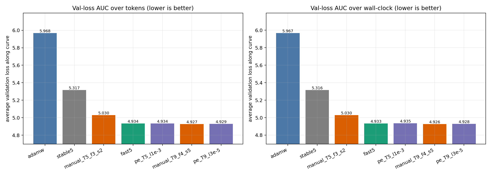
怎么看：左图是 validation loss 关于 token 的曲线面积，右图是关于 wall-clock 的曲线面积；两者都越低越好。
分析：局部斜率会受到起点、eval 噪声和选取区间影响，容易误导。AUC 把整条曲线压成一个指标：如果一个方法早期下降快、后期也保持较低 loss，它的 AUC 就会更低。token AUC 更适合比较样本效率，wall-clock AUC 更适合比较训练性价比。
结论：在当前设置里，fast5 和若干更深 manual/PE 的 AUC 很接近；这说明后续结论应保守表述为第一梯队接近，而不是只凭某个终点或局部斜率排序。
Multi-seed final loss
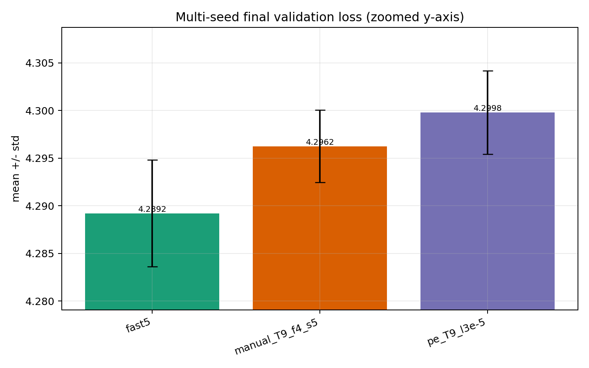
怎么看：柱子是 seeds 0/1/2 的平均 final loss，误差条是 seed 间标准差；这张图使用局部 y 轴，所以细小差距和误差条能看清。
分析：fast5、manual_T9_f4_s5、pe_T9_l3e-5 的差距都不大。fast5 的均值最低，但差距和 seed 波动处在同一个小量级，说明结论应强调稳定 baseline，而不是绝对胜出。
结论：当前 100M-token 设置下，fast5 是最稳的 practical baseline；更复杂的几何改进没有转化为更低 final loss。
Manual depth trend
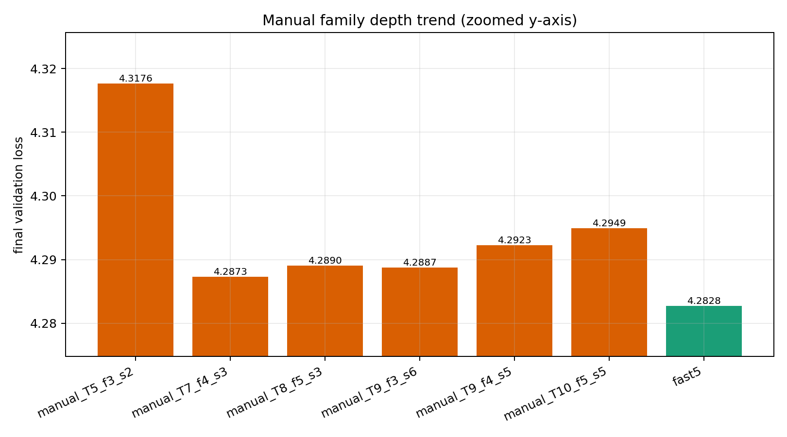
怎么看：横轴是 manual schedule，纵轴是 final validation loss；橙色是 manual family，绿色 fast5 是参考线。这里使用局部 y 轴，专门观察 0.01 量级差距。
分析：T=5 到 T=7/8/9/10 有明显改善，但 T=7 以后进入窄区间。继续加深会改变 update geometry，也会增加计算，但 loss 收益不再单调扩大。
结论：manual depth 有帮助，但不是越深越好；它更像是在接近 fast5 这一强 baseline。
PE lower bound and depth
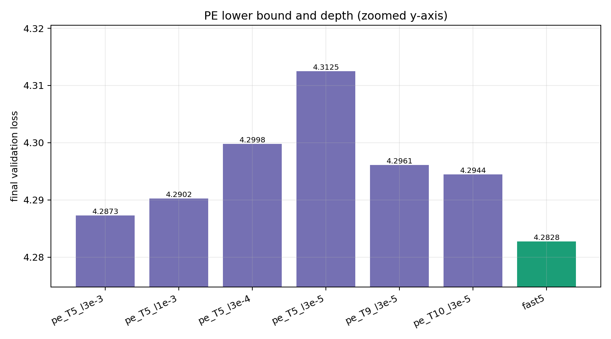
怎么看：横轴比较不同 PE lower bound 与 T，绿色 fast5 作为参考；纵轴越低越好。这里也使用局部 y 轴来显示小差距。
分析：固定 T=5 时，lower bound 改变 final loss；固定 lower bound 后增加 T 可以改善部分 PE 配置，但仍未稳定低于 fast5。
结论：PE lower bound 是实质算法参数，它改变谱映射假设；PE depth 能改善某些配置，但额外迭代需要和成本一起看。
Benchmark wall-clock
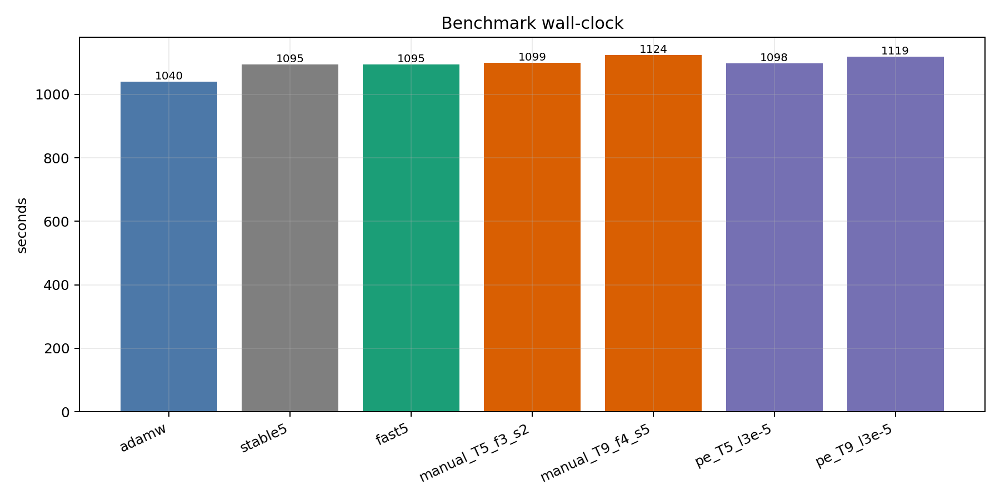
怎么看：柱子表示端到端训练时间；越低越快。
分析：T=5 的 Muon variants 接近，说明只换系数不会明显改变成本。T=9 manual/PE 更慢，主要来自多做几步矩阵正交化。AdamW 更快，因为没有正交化矩阵更新。
结论：最终比较不能只看 loss，也要看同 wall-clock 下是否划算。
谱几何
正交化前后与模块分解
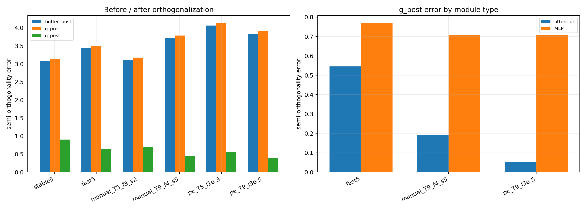
怎么看：左图比较 buffer_post、g_pre、g_post；右图把 g_post error 拆成 attention 和 MLP。误差越低，update 越接近半正交目标。
分析：所有 Muon schedule 都会把 g_pre 推向更低误差的 g_post。更深 manual 和 PE 的 g_post error 低于 fast5，尤其在 attention projection matrices 上差距最大；MLP 上差距较小。
结论：系数序列确实改变了 update geometry；但 geometry 更接近半正交和 validation loss 更低之间不是简单单调关系。
多项式映射解释
这一部分不来自训练日志，而是直接由系数序列计算。它用于解释为什么不同 schedule 会产生不同几何行为。
Composed singular-value maps
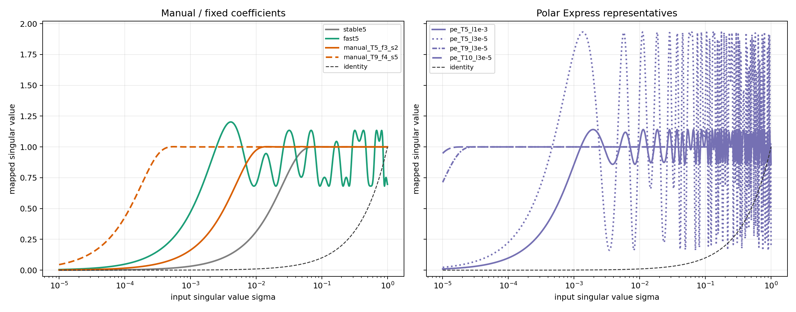
怎么看：横轴是输入奇异值 \(\sigma\)，纵轴是完整 schedule 后的 \(p_T(\sigma)\)。虚线 identity 表示不改变奇异值。
分析：stable 曲线平滑且保守；fast 和更深 manual 对小奇异值更激进；PE 的曲线更容易出现振荡，是因为每一步多项式根据 lower-bound 区间构造，复合后在某些区间会发生 overshoot 和非单调折返。
结论：曲线越激进，通常 g_post error 越低；但过强的折返和振荡也可能让训练 loss 不再受益。
Single-step maps and derivatives
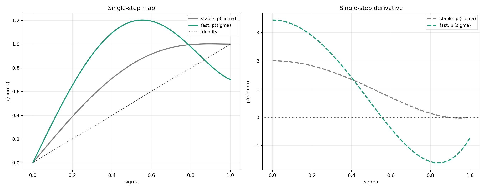
怎么看：左图是单步 \(p(\sigma)\)，右图是单步导数 \(p'(\sigma)\)。实线看映射值，虚线看局部斜率。
分析：fast 的导数在中高奇异值区域会跨过 0 并变成负数，说明该映射不是全区间单调。导数为 0 的点表示局部敏感度最低：附近不同 \(\sigma\) 会被压到相近输出，而不是 update 变成 0。
结论：fast 的小奇异值放大更强，因此训练早期更有效；但非单调区间也解释了为什么更激进的映射需要通过训练结果检验。
Derivative of composed map
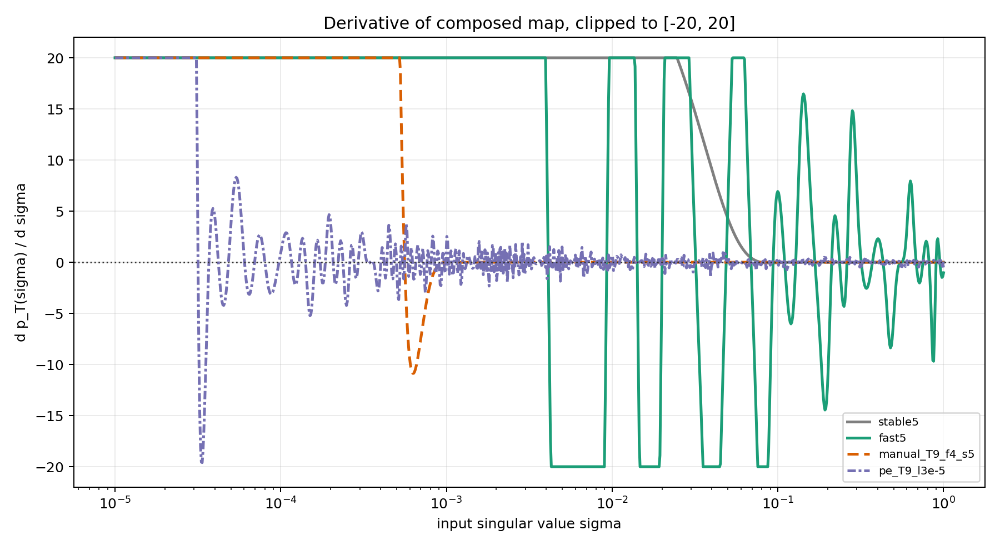
怎么看：这张图看 \(d p_T(\sigma)/d\sigma\)，为避免少数极大值压扁图像，纵轴裁剪到 [-20, 20]。
分析：复合导数会把每一步的局部斜率相乘，因此比单步导数更容易出现符号变化和大幅振荡。振荡更强的 schedule 对小奇异值更激进，但也更可能把相邻奇异值区间折叠到相近输出。
结论：这解释了几何和训练之间的张力：更强的正交化可以降低 g_post error，但未必给语言建模 loss 带来单调收益。
最终结论
fast5 是当前 clean setup 下最强 practical baseline。stable5 偏保守，说明数学上更稳定的系数不一定带来最优 pretraining loss。g_post error，尤其 attention matrices，但 loss 收益没有单调对应。